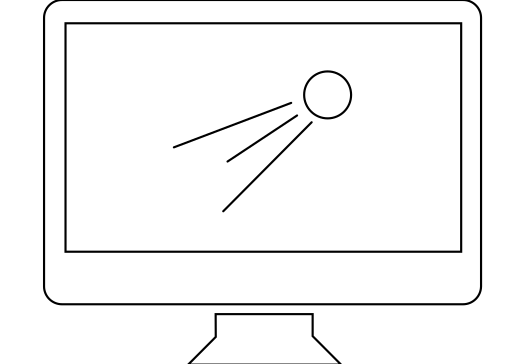

Create Extraordinary Motion Graphics and Visual Effects
MGFX is a professional software for your editing needs. If you’re interested in the post-production process, but need guidance and assistance along the way to a perfect result, then MGFX is the choice for you.
-

Motion Graphics
Create incredible motion graphics with the an industry-standard animation and creative composition software.
-

Video Editing
MGFX offers great tools for basic editing footage that are primarily used to manage layers, colour correction and pixel effects for film and video.
-

Games
Create game overlays and opening sequences. Add visual effects to those opening sequences or game clips.
-

Advertising
MGFX offers simple and amazing tools to create digital signages or animation sequences for commercials and advertisements.
Make Something New
From motion graphics to film editing get the most out of MGFX with our latest tutorials and resources to help you get started and to finished.
MGFX is a great software for finishing off any video project where you need to do an ample amount of post-production tasks in a short period of time. I use it for text graphics, colour correction and many more. The text tools are smooth and easy to use and work with. It’s a very flexible software and I recommend any post-production nerd to use it.
I’m a huge film buff who has always been intrigued with the post-production process of filmmaking. One day I stumbled across MGFX as I was searching the internet for the best post-production and visual effects software. This is now my fourth consecutive year using MGFX. It’s an ideal and simple software for both rookies and seasoned users.